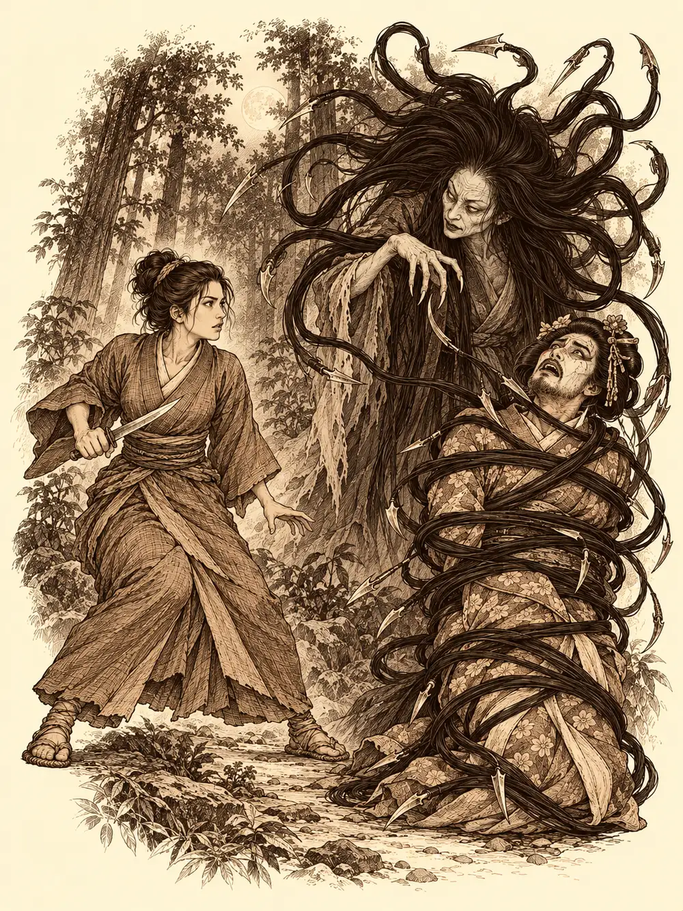

Capítulo 43
Problemas de geishas
Libro III · La boda del shogun
"¡Ya está bien!".
Ushi los empujó hasta la calle con las dos manos y se quedó plantado en el umbral de su taberna, rojo hasta las orejas.
"El otro día me trajisteis a dos orcos que me lo pusieron todo patas arriba. El bardo se pasa el día guiñándome el ojo. Y el mapache se bebe todo lo que hay en el bar. Id a beber a otro sitio".
Les cerró la puerta en las narices.
Llevaban toda la tarde bebiendo y tenían el cuerpo caliente y las piernas blandas. Ikari dio dos pasos, se le enredaron los pies y se empotró de frente contra una farola. Hiki se rio tanto que tuvo que apoyarse en la pared. Solo Guxi parecía más o menos entero, aunque todavía le dolía la cabeza de la competición de bebida con los semiorcos.
Habían sido días tranquilos. Ikari había recorrido tabernas intentando colocar su sake sin que nadie se lo comprara. Hiki había ido varias veces al pueblo pesquero a ver a la sirena y vigilar que no volvieran los perseguidores, porque algún ningyo había escapado. Guxi había empezado a hacer sus primeras joyas, piezas sencillas de aprendiz, y había preparado sus artefactos: un escudo que rechazaba a quien se acercara demasiado, un anillo para recuperar fuerzas mágicas y un pequeño sirviente de metal que volaba a su lado y obedecía sus órdenes.
"Hay un sitio nuevo por aquí que os quiero enseñar", dijo Guxi.
No llegaron. En la esquina una geisha repartía papeles, y al verlos se les acercó con pasos cortos y una sonrisa.
"¿Queréis unas copas y buena compañía, chicos?".
Le acarició la mano a Hiki. A Ikari le rascó detrás de la oreja, y el tanuki cerró los ojos. Guxi intentó protestar que él solo quería enseñarles dónde se ganaba el dinero, no dónde se gastaba, y nadie le hizo caso.
Era el burdel de Sho, el de Wishi.
Dentro los sentaron sobre cojines, les sirvieron sake y los rodearon de manos suaves. Hiki estaba en el séptimo cielo. Ikari se dejó acunar entre las rodillas de dos muchachas como un muñeco de trapo, con la barriga al aire. Guxi, si no hubiera tenido aquella resaca, habría estado en el paraíso.
Al cabo de una hora se fijaron en una muchacha que no era como las demás. Tendría veinticinco años, llevaba un kimono distinto, más sencillo, y hablaba con Wishi en voz baja.
"Madame Jone nos dijo que nos enviaría unas chicas desde Ukio", le decía Wishi. "Tendrían que haber llegado hace días. Se habrán despistado, o se habrán parado a hacer negocio por su cuenta. Necesito que vayas a buscarlas".
Le dio una bolsa grande con comida para un par de semanas y doscientas monedas para imprevistos, por si necesitaba un caballo. Sobre un mapa le marcó el camino principal hacia Ukio y dos tabernas donde quizá se habían detenido. Le advirtió que no se saliera del camino, que en los bosques había criaturas.
"Espero que haya un extra en mi próxima paga", dijo la muchacha.
Guxi se levantó, buscó un vaso de agua para despejarse y se acercó a ella.
"¿Trabajáis para Jone? Soy un socio suyo. La he ayudado varias veces. Yo tengo que ir a Ukio a recoger unas cosas. Si quieres, podemos acompañarte".
Hiki se puso en pie con alguna dificultad, hincó una rodilla delante de la muchacha y le besó la mano.
"Nada me gustaría más que ayudar a una dama en apuros".
Ella se miró la mano.
"Qué lindo que todavía quede gente educada".
Se llamaba Kasumi.
Antes de salir pasaron por el taller del instructor del shogun, que los recibió rascándose una oreja de la que le asomaban pelos, con tres dientes en la boca y uno menos que la semana anterior. Les explicó, sacando papeles, que con un permiso de oficio podían trabajar en todo Kuroto sin pagar impuestos al shogun: minería, tala, herboristería, curtido, alquimia, herrería, peletería, joyería, cocina.
"¿Cuál paga más sin tener que mover un dedo?", preguntó Kasumi.
El anciano le miró los brazos, finos como juncos.
"Quizá la alquimia. Que otros te traigan los materiales y tú hagas tus propias pociones".
Hiki eligió la cocina, porque a una dama, dijo, se la conquista por el estómago. Ikari, que quería aprovechar su maña para las chapuzas y fabricar cosas pequeñas, se quedó con la peletería. Cada uno pagó doscientas cincuenta monedas y recibió sus herramientas. Empezaban desde abajo, como aprendices.
En los establos subieron al carro y tomaron el camino de Ukio. El pequeño sirviente de metal de Guxi conducía, con las riendas entre sus dedos de latón, mientras su dueño ordenaba utensilios de joyero en una caja. Ikari seguía bebiendo y dormitaba. Hiki tocaba para animar el viaje y pensaba en recetas. Kasumi, apoyada en una de las lámparas del carro, se miraba las uñas y calculaba si aquellas doscientas monedas habían sido una buena inversión y qué excusa daría si las chicas aparecían muertas.
Era ya de noche cuando, en un pequeño cruce de caminos, vieron un carro apartado, metido entre los primeros árboles como si alguien lo hubiera escondido allí.
Hiki lo registró a la luz de una lámpara que sostenía con una mano de magia. Había kimonos de seda buena, rosados, bordados con flores, como los de las geishas de Sho. Había un cofre pequeño con monedas de oro, unos papeles con el sello del burdel de Jone y algunas cosas más.
"No es un robo", dijo Guxi. "Se habrían llevado el oro".
Kasumi encontró en el suelo marcas de forcejeo y siguió unos surcos en la tierra: algo había sido arrastrado hacia el bosque. Había también otro rastro distinto, más ancho, de algo que no arrastraba nada, sino que se arrastraba, y que se alejaba en otra dirección.
Ikari, que se había adentrado entre los árboles en silencio, a punto estuvo de tropezar con un cuerpo. Era una de las geishas.
"Aquí", llamó en voz baja.
Guxi se arrodilló junto a ella. Tenía cortes, muy limpios, hechos con algo más afilado que cualquier arma que él conociera. Y por toda la piel, de la cara a los tobillos, unos pinchazos diminutos, como si la hubieran atravesado mil alfileres. No supo decir qué criatura hacía algo así. Kasumi le registró el bolso de piel que llevaba al cinto: unos papeles sin importancia y ni una moneda.
"Quien haya sido no buscaba dinero", dijo. "Esto ha sido un asesinato".
Hiki se quedó mirando a la muerta un rato. Luego fue al carro, eligió un kimono, se lo puso, se maquilló la cara de blanco con el estuche de disfraces y se peinó lo mejor que pudo.
"Si atacaron a unas geishas en este camino", dijo, "a lo mejor vuelven a por otras".
Guxi, Ikari y el sirviente de metal se escondieron entre los árboles, a unos veinte pasos. Hiki y Kasumi se pusieron en mitad del camino y empezaron a tocar: él cantaba a voz en grito como una cantante de ópera, ella rasgueaba un laúd y movía las caderas. Cada uno llevaba un ritmo distinto. El blanco de la cara se le empezó a cuartear a Hiki por la barba.

De entre los árboles llegó un siseo.
Luego salió una anciana. Bajita, de pelo blanco, encorvada, que se tapaba las orejas.
"Ay, qué ruido es este. Qué mal suena. Callaos, chicas, callaos".
Se acercó a Hiki y le tocó la cara con los dedos.
"¿Y esto que tienes en la cara, hija mía? Todo pelo".
"Esta mañana no me dio tiempo a depilarme, señora".
La anciana miró a Kasumi.
"Ay, esta es más guapa".
Los observaba de arriba abajo, muy despacio. Luego dio un paso atrás. Y en ese paso, al reflejo de la luna, Kasumi vio otra cosa durante un parpadeo: una cara pálida, un pelo negro larguísimo, y uno de aquellos cabellos que se movía solo.
Hiki ya estaba envuelto. El pelo de la anciana le había rodeado el cuerpo de los pies a los hombros, apretado como una cuerda, y la mujer se transformaba delante de ellos: más alta, blanca como la cera, con una melena negra que se movía como un nido de serpientes, y en las puntas de los cabellos había cuchillas, y bajo ellas, pequeñas púas.
Kasumi sacó la daga e intentó cortar el pelo que sujetaba a Hiki. Falló, y le hizo un corte en el brazo al bardo.
"¡Lo siento!".
Ikari pronunció un conjuro y la criatura desapareció de donde estaba para reaparecer lejos, a noventa pies, y el pelo que sujetaba a Hiki se soltó. La mujer de la melena movió los dedos, recitó algo, y el aire alrededor de los cazadores se quedó mudo: un silencio espeso donde ninguna palabra se oía. Hiki se acercó a ella y le susurró, con una voz que por un instante sí sonó, que tenía las puntas abiertas. La mujer apenas se inmutó.
Guxi desplegó su balista y disparó, sin acertar. El sirviente de metal, en cambio, sí le dio. Kasumi se alejó de ella, la miró y le lanzó un hechizo que le arrancó una carcajada imparable. La criatura cayó al suelo retorciéndose de risa, y el silencio se deshizo.
Ikari le lanzó fuego. La mujer se levantó furiosa, con los ojos encendidos, y soltó un chillido. Del suelo brotaron raíces y flores que se enredaron en los pies de los tres cazadores y los dejaron clavados.
Al grito respondió el siseo del bosque. De entre los árboles salieron dos mujeres serpiente, con cuerpo de reptil y cabeza y torso de mujer, deslizándose a toda velocidad. Una se enroscó en las piernas de Hiki y le clavó los colmillos. La otra hizo lo mismo con Kasumi y le mordió el cuello. Las dos se alimentaban de la sangre que les sacaban, y las heridas que les habían hecho los cazadores se les cerraban mientras bebían.
Ikari tocó su anillo y la magia le salió más rápida de lo normal. Lanzó una bola de fuego que alcanzó a la mujer de la melena y a una de las serpientes. A la mujer se le prendió el pelo, se le chamuscó entero, y cayó al suelo. No se volvió a mover. Después el tanuki lanzó otro conjuro que hacía daño a los enemigos y, al mismo tiempo, devolvía fuerzas a los atrapados, que sintieron cómo se les cerraban algunos mordiscos.
Hiki, sujeto por la cola de la serpiente, le susurraba cosas horribles y le clavaba la navaja cada vez que podía. Kasumi, presa de la otra, le hundió la daga en un ojo. Guxi hizo que Kasumi creciera, que su cuerpo se volviera el doble de grande para que la serpiente no pudiera sujetarla tan fácilmente. Luego disparó la balista contra la que tenía a Hiki: el impacto la empujó diez pies hacia atrás y la obligó a soltarlo. Ikari quemó a una. Guxi lanzó rayos de fuego a la otra, que empezó a arder, y también soltó a su presa.
Hiki y Kasumi quedaron libres, cubiertos de baba y mordiscos.
"Por esto las damas no salen a buscar a otras", dijo Kasumi, quitándose saliva del kimono.
Ikari le arrancó a una de las serpientes un trozo de piel. No le iba a servir para su oficio, pero se lo llevó. Kasumi se guardó unas escamas. Luego buscó en el carro un kimono limpio, se escondió detrás de unos arbustos y se cambió, y nadie la vio.
Guxi desmontó del carro abandonado unas piezas que le podían servir. Kasumi volvió a buscar el rastro que se adentraba en el bosque y lo siguió entre los árboles hasta que encontró a la segunda geisha, también muerta, escondida entre la maleza.
"Las llevamos", dijo Guxi. "Querrán pruebas. Y su familia querrá enterrarlas".
Cargaron los dos cuerpos en el carro y dieron la vuelta hacia Sho. No siguieron hacia Ukio. Llegaron de día, y en la puerta de la ciudad los samuráis reconocieron a Guxi y le hicieron una reverencia. Se ocuparon ellos de las muertas: las bajaron del carro con cuidado y se las llevaron a la morgue.
Antes de entrar en el burdel, Kasumi se volvió hacia los demás.
"Ahora hablo yo".
Wishi salió a recibirla.
"¡Kasumi! ¿Y las muchachas?".
"Las hemos traído. Ahora mismo duermen en la morgue".
Wishi se llevó las manos a la boca.
Kasumi le contó lo de la mujer de la melena de cuchillas, lo de las dos serpientes con cabeza de mujer.
"¿Tú sabías que en el bosque había esas cosas?".
Wishi bajó la voz y se le acercó al oído.
"Pensaba que lo sabías. Algunas de las muchachas, sobre todo las de Ukio, son yokai".
"¿Y me lo dices ahora? Yo llamé a tu puerta buscando trabajo".
"Creí que te había mandado Madame Jone". Se mordió el labio. "La de la melena... me encaja. Escucha. Madame Jone tiene una rival en el negocio. Otra mujer que tenía su propio burdel y le hacía la competencia. Desde que Jone hizo el pacto con los cazadores, a ella le va de maravilla, y a la otra le ha ido de mal en peor. Quizá haya venido a quitarnos a las chicas. O a sabotearnos".
"Está muerta".
"Yo no lo daría por seguro. Esas saben manipular la vida". Wishi la miró de arriba abajo. "Se me ocurre una cosa. Acompaña a estos muchachos en sus misiones. Averigua si esa mujer está muerta de verdad y dónde tiene su local, antes de que se entere Jone, que si no nos corta la cabeza a las dos. Y tráelos por aquí cuando tengan tiempo libre, que así sacamos algo nosotras también. Si lo consigues, a lo mejor Madame Jone te hace jefa de otro burdel".
A Kasumi le brillaron los ojos.
"Casi muero. Quiero un extra".
Wishi le vio las mordeduras del cuello y suspiró. Le puso en la mano cincuenta monedas.
"Ve al médico, que te cure eso".
Guxi, al pasar, le recordó a Wishi que la puerta que le había encargado Jone estaría lista en dos semanas. Kasumi salió a buscar un médico con la mano en el cuello. Detrás de ella, en el salón, las geishas volvían a rodear a Hiki, a Ikari y a Guxi con sake y caricias, como si nada hubiera pasado, y Hiki se sentó al piano.